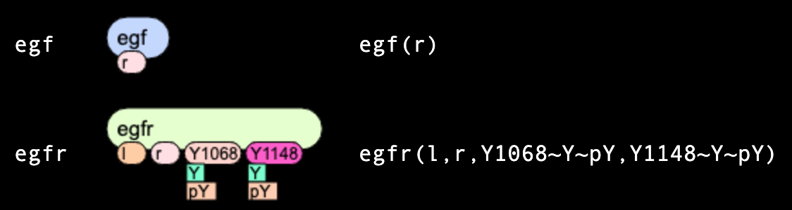
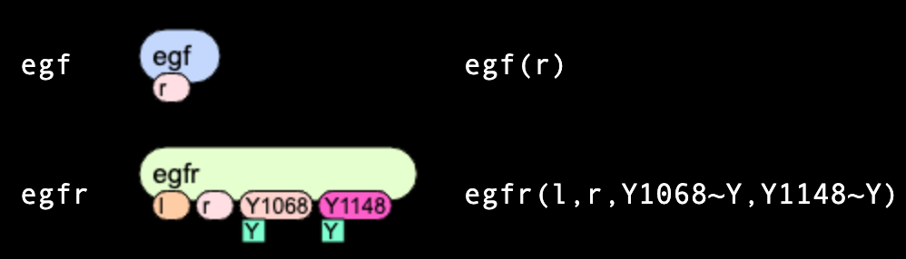
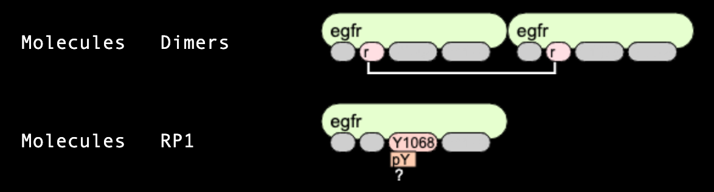
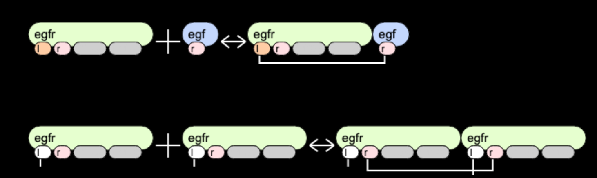

What is rule-based modeling?
Rule-based modeling is based on the representation of biological objects (declared as molecules but in fact
may be representing any objects from protein domains to humans or ecosystems) as objects with a set of attributes
(called sites) that may take a finite number of states.
In non-biology world, a traffic light is such an object - it has 3 sites (red, yellow, green)
that can be in 2 states each (on/off). Theoretically, there are 8 possible states of a traffic light. In reality, the number of
possible states is less, as green and red can not be "on" simultaneously.
Molecular interactions are defined as rules for transforming the attributes of these objects.
The approach allows one to systematically incorporate site-specific details about protein-protein interactions
into a model for the dynamics of a signal-transduction system
(e.g. Goldstein et al., 2002,
Faeder et al., 2003,
Blinov et al., 2006),
but the method has other applications as well, such as following the fates of
individual carbon atoms in metabolic reactions (Mu et al., 2007),
or analysis of phase transition in large molecular assemblies
(Chattaraj et al., 2021).
In non-biology word, the rule for state change in the traffic light would be "If green light is on and red if off, turn yellow on".
The rule-based descriptioncan be coded in multiple ways.
Textual coding of a rule-based modeling
A rule-based models are defined in several languages, such as BioNetGen Language BNGL
(Faeder et al., 2009),
Kappa Language (Boutillier et al., 2018),
ML-rules (Maus et al., 2011),
BioCHAM (Calcone et al., 2006).
Multiple modeling and simulation tools work with rule-based models, such as
BioNetGen (Blinov et al., 2004),
KaSim (Boutillier et al., 2018),
SmolDyn (Andrews, 2017),
VCell (Schaff et al., 2016),
NerdSS (Varga et al., 2020),
PySB (Lopez et al., 2013),
Simmune (Zhang et al., 2013),
MolClustPy (Chattaraj et al., 2023).
Here, we focus on the easy visual representation of
the rule-based model specified in the BioNetGen language (BNGL).
Molecules
In the Rules RailRoad Epidermal Growth Factor Receptor signaling model
(Blinov et al., 2006) there are several molecules.
Below we consider in details two: "egf" molecule (ligand) has
a single site "r",
while "egfr" molecule (receptor) has four sites: "l", "r", "Y1068" and "Y1173".
Two last sites can be in two mutually-exclusive states each: either "u" or "p".

Species
In rule-based modeling, like in agent-based modeling, simulations start with the certain set of seed species.
Here we describe two: "egf" species is identical to "egf" molecules, but "egfr" species must have states of sites
being uniquely defined. In the example below, both "Y1068" and "Y1073" sites have a state "u".

Observables
As each species includes all details on levels of protein domains, it often necessary to group species into pools
of "observables" having the same features, and count molecules within these pools to compare simulation results with
experimental observations. In the example below, the first line defines an observable "dimers" that
has two "egfr" molecules connected through "r" sites. Other sites are shown in grey, which means they can be
connected in any states (for "Y1068" and "Y1173" sites) or be connected to any other molecules. The second observable "RP1"
defines all species that have "egfr" molecule as part of them, with site "Y1068" being phosphorylated,
but possibly bound or unbound to other molecules. Notice the first term "Molecules". It means that observable counts all
molecules, so the population count of this species is reported multiplied by 2, as it contains two instances of "egfr"
molecules. The term "Species" counts this species only once.

Reaction rules
Reaction rules define classes of reactions with the same kinetics, by specifying features of molecules that participate
in these reactions. In the example below, "egf" ligand binds to "egfr" molecule via making a bond between
"r" site of "egf" and "l" site of "egfr". Interestingly, "r" site of "egfr" is shown in color, indicating that
it is important for this interaction. No marks under this site means that it must be unbound for interaction to happen
- meaning that "egf" can bind only to monomeric "egfr".
All grey sites have no effect on the interaction, so the same kinetics applies whether "egfr" is bound to any other proteins
on other sites.
The second reaction is dimerization, and the "l" sites of "egfr" molecules must be bound to something. So, combined with the first rule,
it means that ligand-bound receptors can dimerize, and kinetics of dimerization does not depend on the state of intracellular sites or
on the other molecules bound to "egfr".
